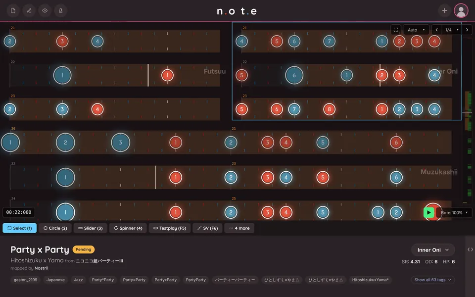

What it is
n.ot.e is a beatmap editor for osu!taiko that I started in July 2026 and publish under my osu! name, Nostril. It runs in the browser with nothing to install, and as a standalone app for Windows, macOS, Linux, Android and iOS.
It is the same editor on desktop, tablet and phone, and can be fully operated with mouse, pen or touchscreen.
The clips on this page are the real app. They are recorded from its own guided tour, where every demo is a live editor being driven by a script instead of a video.

Collaboration with no server in between
Several people can work on the same map at once and see each other's cursors, selections and edits as they happen. It is fully peer-to-peer, so nothing is ever uploaded to a server.
The map is held in a CRDT (Yjs) that each browser syncs directly with the others over WebRTC; a small signaling server only introduces peers to each other. The song and the rest of the set's files travel peer to peer as well, over WebTorrent, and undo only takes back your own edits.
Parametric SV
Taiko mappers change the scroll speed of notes for effect (slider velocity, or SV), which normally means placing and editing a separate timing line for every change.
n.ot.e has its own expression language for it. A Transform covers a stretch of the map and computes the speed at each note from an expression such as linear(1.0, 0.9). Transforms stack for nested effects, and you can write your own functions.
The language is deterministic by design, so every collaborator derives the same result. When an existing map is opened, a curve fitter recognises the ramps already in it and turns them into Transforms.
Timing
Spectrogram, onset and waveform views sit behind the timeline for timing a song to the millisecond.
Adjusting a red line (a tempo or offset change) under a finished map normally breaks it. Here the notes stay snapped, barlines stay correct and SV multipliers are rescaled automatically.
Linked copies
Linked Paste creates instances of a pattern that keep a permanent reference to the original. Change the source and every instance updates; change one instance and only that one changes.
Each copy shows how it differs from the original, and relationships such as Abekobe (the opposite colours) and Reverse carry through.
Testplay
Testplay plays the map without leaving the editor, by hand or on Autoplay, with the gameplay mods. Judgement and scoring match osu!stable, and the scoring code is checked in the test suite against real osu!stable scores.
Full Testplay goes further and simulates osu!stable's taiko gameplay screen: its playfield, health bar and mascot, and the beatmap's background, video and storyboard.
More ways to look at a map


Every platform
The interface is built for touchscreens as well as mouse and pen. Long-press menus stand in for right-click, and Testplay has a touch drum with rebindable keys.
The standalone builds add offline use, a native audio backend and saving straight to the .osu file.


Only writing what was touched
A beatmap is a plain text file that other tools and other mappers edit too, so n.ot.e is strict about what it writes. A map that is opened and exported unchanged comes out byte for byte the same, and an edit changes only the lines it touched.
To make that possible the parser keeps a lossless syntax tree of the file, and what n.ot.e adds on top, such as Transforms and linked copies, is stored in a sidecar file beside the map instead of inside it.
Under the hood
The codebase is a TypeScript monorepo: eleven packages underneath a Next.js app, a browser extension for Chrome and Firefox, and Rust shells for the native builds. A map flows through the layers on the right.
More than 2,700 tests run on every push alongside a typecheck of the whole app, and GitHub Actions builds the desktop and mobile apps.
- ParserA lossless syntax tree of the .osu file, plus the timing helpers every other layer shares.
- CollabThe Yjs document that is the source of truth while editing. Peers sync over WebRTC; the set's files go over WebTorrent.
- SV engineThe expression compiler, the derivation from Transforms down to timing lines, and the curve fitter.
- EnginePlayback and testplay simulation, the audio clock, and the serializer that writes the file back.
- RendererPixi.js on WebGPU (WebGL on mobile), one renderer per band, with custom shaders for the snap grid, waveform and spectrogram.
- EditorInput handling, with one class per tool.
- AppA Next.js and React interface in 17 languages. Tauri wraps the same app for desktop and mobile, with a native audio backend.